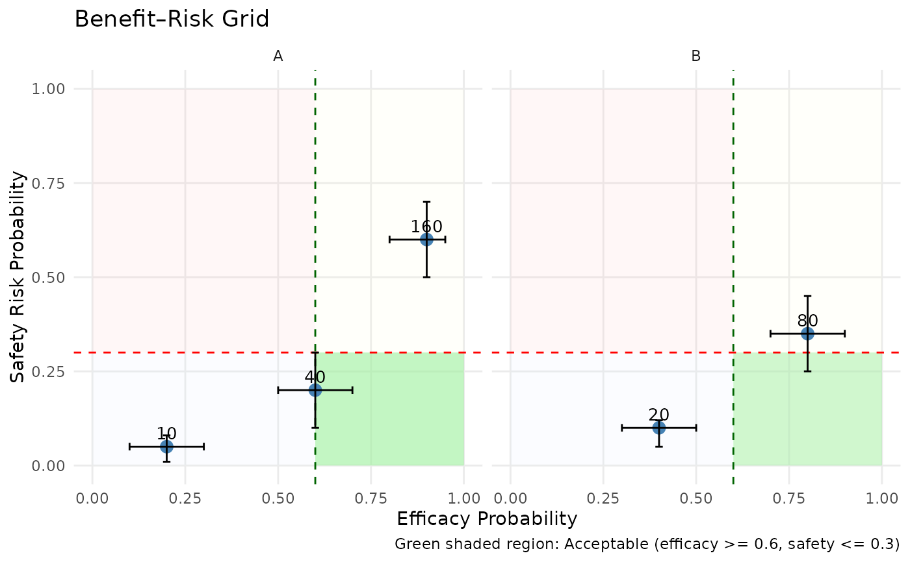
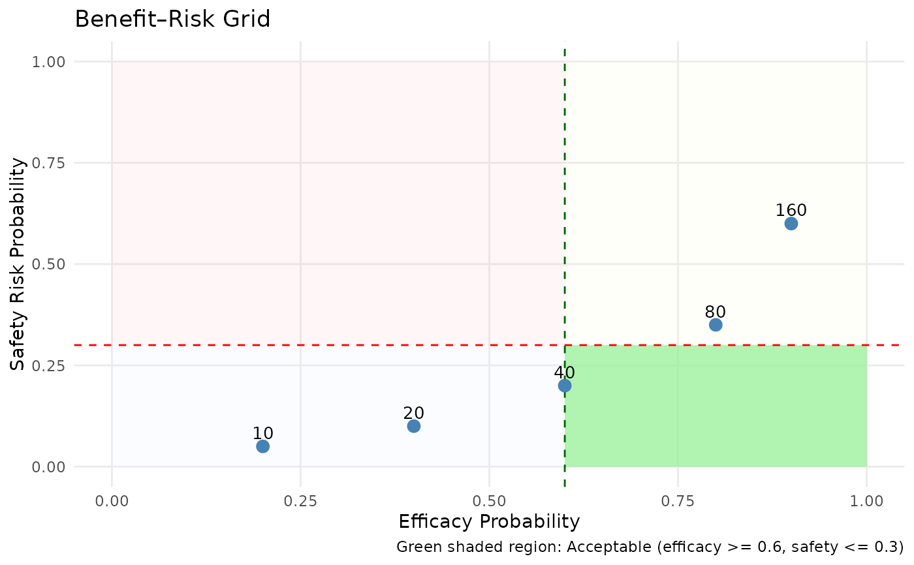

Creates a 2D decision space plot showing efficacy vs safety probabilities or values. Useful for dose selection or benefit-risk communication. Accepts group-wise data and overlays thresholds to define acceptable decision regions.
plot_benefit_risk_grid(
data,
efficacy_var,
safety_var,
dose_var = NULL,
efficacy_thresh,
safety_thresh,
label_points = TRUE,
facet_var = NULL,
efficacy_lower = NULL,
efficacy_upper = NULL,
safety_lower = NULL,
safety_upper = NULL,
quadrant_colors = list(green = "#ccebc5", red = "#fbb4ae", amber_top = "#ffffcc",
amber_right = "#d9f0ff"),
title = "Benefit–Risk Grid",
x_lab = "Efficacy Probability",
y_lab = "Safety Risk Probability"
)A data frame containing one row per dose or scenario.
Column name for efficacy estimate or probability.
Column name for safety estimate or probability.
Optional column name for labeling dose levels.
Numeric; minimum acceptable efficacy.
Numeric; maximum acceptable safety risk.
Logical; if TRUE, label points with dose.
Optional variable to facet the grid by subgroup.
Optional column for lower bound of efficacy CI.
Optional column for upper bound of efficacy CI.
Optional column for lower bound of safety CI.
Optional column for upper bound of safety CI.
Named list of fill colors for each benefit-risk quadrant.
Title for the plot.
Label for the x-axis.
Label for the y-axis.
A ggplot object.
df <- data.frame(
dose = c(10, 20, 40, 80, 160),
prob_efficacy = c(0.2, 0.4, 0.6, 0.8, 0.9),
prob_safety = c(0.05, 0.1, 0.2, 0.35, 0.6),
subgroup = rep(c("A", "B"), length.out = 5),
eff_lo = c(0.1, 0.3, 0.5, 0.7, 0.8),
eff_hi = c(0.3, 0.5, 0.7, 0.9, 0.95),
saf_lo = c(0.01, 0.05, 0.1, 0.25, 0.5),
saf_hi = c(0.08, 0.12, 0.3, 0.45, 0.7)
)
plot_benefit_risk_grid(
df,
efficacy_var = "prob_efficacy",
safety_var = "prob_safety",
dose_var = "dose",
efficacy_thresh = 0.6,
safety_thresh = 0.3,
efficacy_lower = "eff_lo",
efficacy_upper = "eff_hi",
safety_lower = "saf_lo",
safety_upper = "saf_hi",
facet_var = "subgroup"
)

df <- data.frame(
dose = c(10, 20, 40, 80, 160),
prob_efficacy = c(0.2, 0.4, 0.6, 0.8, 0.9),
prob_safety = c(0.05, 0.1, 0.2, 0.35, 0.6)
)
plot_benefit_risk_grid(
df,
efficacy_var = "prob_efficacy",
safety_var = "prob_safety",
dose_var = "dose",
efficacy_thresh = 0.6,
safety_thresh = 0.3
)
